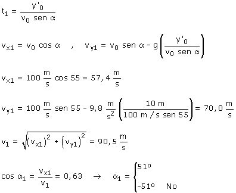
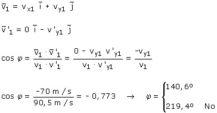

b)
Ecuaciones del movimiento del proyectil:
|
|
Parámetros: v0 = 100 m/s, α = 55º g = 9,8 m/s2 |

Calculamos la velocidad del proyectil en el instante del choque:

 |
En el momento del choque la velocidad del proyectil forma 51º con la horizontal y la velocidad de la piedra es vertical hacia abajo. El ángulo formado por las velocidades será: 51º + 90º = 141º |
Hay otra forma menos rupestre de calcular el ángulo que forman los vectores velocidad: utilizar el producto escalar
